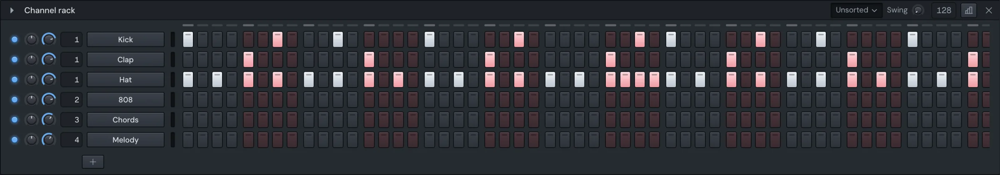

Make
Channel rack
The Channel rack holds your song's instruments. Each row is a channel: a sampler playing one sample, or one of your plugins. The steps beside each channel are a pattern's notes, clicked in on a grid of sixteenths. Patterns are what you place on the Playlist to build the song.
Open it with F6 or ⌥2, or from the Window menu.

Make a beat with the steps
- Pick a pattern in the pattern picker on the toolbar (see Patterns).
- Click a step to turn it on. Right-click it to turn it off.
- Drag along a row to paint steps on, or right-drag to clear them.
- Press Space to play. A light above the steps follows the playhead.
A step is a note that starts on the grid and lasts one step. Steps and the Piano roll are two views of the same notes: a step you click shows in the Piano roll, and a note you draw there on the grid shows as a step. When a channel's notes are more than plain steps (longer notes, notes off the grid, chords), its row shows a small preview of them instead. Click the preview to open them in the Piano roll.
The steps alternate colour by beat, so you can count them at a glance. With a step focused, Enter turns it on and Delete turns it off.
How long a pattern is
The pattern length display on the rack's title bar says how long the shown pattern is. By default it's Auto: one bar if the notes fit in one, otherwise rounded up to an even number of bars.
To set it yourself, drag the display up or down, or use the arrow keys on it. Right-click it for Auto, 1 bar, 2 bars, 4 bars or 8 bars. Steps past the pattern's end show faded: they're kept, but the pattern doesn't play them.
The rack shows at least a bar of steps. Drag the rack's right edge to show more; a longer pattern scrolls sideways. Drag with the middle button to pan through the steps.
Shift and edit a channel's steps
Right-click a channel's button for its menu. The right-hand column works on that channel's steps:
- Cut, Copy, Paste: the channel's steps in this pattern. Paste replaces what's there.
- Fill each 2 steps, Fill each 4 steps, Fill each 8 steps: a quick hat, clap or kick line.
- Clear steps: empties the row.
- Rotate left ⇧⌘← and Rotate right ⇧⌘→: move every step one place along, the last wrapping round to the start.
With the rack in front, ⌘C, ⌘X and ⌘V copy, cut and paste the first selected channel's steps too.
Shape steps in the graph editor
The graph editor shows each step's velocity or note as a bar under the rows. Open it with the graph button on the rack's title bar, ⌘K, Graph editor in a channel's menu, or Window › Graph Editor.
It shows the first selected channel. Pick Velocity or Note on its tabs. Only steps with a note have a bar.
- Drag across the bars to draw values.
- ⌘-drag moves them all together: velocities scale, notes shift.
- Right-drag draws a straight ramp from where you pressed to where you drag.
- ⌥-drag puts bars back to their default: the usual velocity, or the channel's root note.
The Note tab reaches an octave either side of the root note. For anything wider, use the Piano roll.
Patterns
A pattern is one set of notes for every channel. The pattern picker on the toolbar shows which one the rack and the Piano roll are editing.
- Change pattern: scroll over its name, drag it up or down, or press ↑ or ↓ while it has the focus. The numpad's + and − step through them from anywhere.
- Make one: press the + beside the name, type a name and press Enter. Or step past the last pattern: a new empty one appears, greyed, and joins the song once you put a note in it or place it on the Playlist.
- Rename, clone or delete: open the list with the arrow beside the name. The field at its top renames the shown pattern; click a pattern in the list to show it. Clone and Delete at the bottom act on the shown pattern. The last pattern can't be deleted.
The Patterns menu has New Pattern, Clone Pattern, Previous Pattern and Next Pattern too.
Add channels
Press the + under the last row to add a channel. Choose Sampler to play a sample, or one of your instrument plugins. The list shows the plugins you've starred in the Plugin manager; More plugins… opens it, and Scan for plugins looks for ones installed since the last scan. F8 opens the same list, opening the rack first if it's closed.
A new sampler is selected and its settings window opens. A plugin's own window opens once it has loaded. See Plugins for working with them.
The starter kit
A new song starts with a kick, a clap, a hat and a snare, ready to click in. Adding them isn't an undo step, so ⌘Z straight after starting won't take them away.
The rack's menu (the arrow at its top left) adds more:
- Add starter kit: the same four drums again.
- Add starter instruments: a bass, a pluck, a pad, a lead and keys, as samplers that play notes.
- Add samples…: pick audio files. Each becomes a channel named after its file.
Drop files on the rack
Drag audio files from Finder, File Explorer or the Browser onto the rack. A line shows where they'll go. Each file becomes a new sampler channel there, and the new channels are selected. Files dropped on an empty part of the desktop become channels too.
Drop a file onto a channel's button instead to replace that channel's sample. That works for samplers, not plugins.
Work with a channel
Each row, from left to right:
- Mute light. Click it to mute or unmute the channel. ⌘-click or ⌥-click it to solo the channel, or right-click it and choose Solo.
- Pan and Volume knobs.
- Mixer track, if track selectors are showing (see Send channels to the Mixer).
- Channel button. Click it to open the channel: a sampler's settings window, a plugin's own window. It stays pressed in while the window is open. ⌘-click it to hear the channel.
- Selector, the thin light at the end. It's outlined while the channel is selected and lights while it sounds.
- Steps, or the notes preview.
The channel's colour is the stripe on the button's left edge. A button turns red with a warning sign when its sample is missing or can't be read, or its plugin didn't load; a spinner shows while a plugin loads, and a plug icon marks plugin channels.
Open channel windows
Clicking a channel button opens its window and closes the one that was open, so one channel window shows at a time. Click the button again to close it. ⌥-click a button to open its window as well as the ones already open.
Mute and solo
Soloing a channel mutes all the others. Solo it again while it's the only one playing to unmute every channel.
With the rack in front, the number keys 1 to 9 and 0 mute the first ten channels, and ⌘1 to ⌘0 solo them.
Select channels
- Click a selector to select that channel alone.
- Drag along the selectors to select a run of channels.
- ⇧-click a selector to select everything from the last one you picked.
- Right-click a selector to add its channel to the selection; right-drag adds every channel you pass.
- Double-click a selector to open that channel in the Piano roll.
Clicking a channel's button selects it as well. With the rack in front, ↑ and ↓ select the channel above or below, and ⇧↑ and ⇧↓ extend the selection.
Move, clone and delete channels
These act on the selected channels. They're in the rack's menu, and Clone and Delete are in each channel's menu too.
| What | Key |
|---|---|
| Move selected up / Move selected down | ⌥↑ / ⌥↓ |
| Clone selected | ⌥C |
| Delete selected | ⌥⌫ |
You can also hold ⇧ and turn the mouse wheel over a channel's button to move it up or down.
A clone sits right under its channel, with the same sample, plugin and settings, but none of its notes.
Edit › Delete deletes the selected channels while the rack is in front.
Name and colour a channel
Right-click the channel's button and choose Rename and color…. Type a name, pick a colour (or the empty swatch for the usual one) and press Enter or Save. Escape leaves it as it was. For just the colour, use the Color submenu in the same menu.
Replace a channel's instrument
Replace… in a channel's menu swaps its instrument for the Sampler or another plugin. The channel keeps its notes in every pattern, its volume, pan and mixer track.
More in a channel's menu
- Piano roll: opens the channel's notes there.
- Channel settings…: the settings window, for a plugin channel too.
- Load sample…: pick a new sample for a sampler.
- Cut itself: a new note stops the one still playing, as an open hat cuts off the last.
- Hear it: plays the channel once, the same as ⌘-clicking its button.
- Extract stems… and Convert to notes…: see Stems and notes.
For a plugin that didn't load, the menu has Try again.
Transpose channels
Transpose selected… in the rack's menu moves every note of the selected channels in the shown pattern. Type the number of semitones, or use the −12, −, + and +12 buttons, then press Transpose. In the field, ↑ and ↓ move it by a semitone, and with ⇧ by an octave.
Swing
Turn the Swing knob on the rack's title bar to push every second sixteenth late. At its top it delays them by half a step. Swing is the song's: every pattern and channel follows it.
Each sampler and plugin channel has its own SWING knob in its settings window. It sets how much of the song's swing that channel takes, so a hat can swing while the kick stays straight.
Show channels by group
The group chip on the rack's title bar picks which channels show:
- Unsorted: your instruments and samples.
- Audio: the channels the Playlist's audio clips play through.
- All: both.
Send channels to the Mixer
Every channel plays into a track of the Mixer.
- Assign selected to free mixer tracks (⌘L, in the rack's menu, or Tools › Assign Free Mixer Tracks) gives each selected channel an empty mixer track named after it.
- Show mixer track selectors (⌥M, or View › Track Selectors) shows each channel's track number in
its row. Drag it up or down, or scroll over it, to change the track;
---is the master. Right-click it for Route to a free track, Show in the mixer and Type in value….
Keys
These work while the rack is the window in front. See Shortcuts for the rest.
| Key | What it does |
|---|---|
| F6 or ⌥2 | Show the Channel rack |
| F8 | Add a channel |
| 1 … 0 | Mute or unmute the first ten channels |
| ⌘1 … ⌘0 | Solo the first ten channels |
| ↑ / ↓ | Select the channel above or below |
| ⇧↑ / ⇧↓ | Extend the selection |
| ⌥↑ / ⌥↓ | Move the selected channels |
| ⌥C | Clone the selected channels |
| ⌥⌫ | Delete the selected channels |
| ⇧⌘← / ⇧⌘→ | Rotate the steps |
| ⌘C / ⌘X / ⌘V | Copy, cut or paste the first selected channel's steps |
| ⌘K | Show or hide the graph editor |
| ⌘L | Assign the selected channels to free mixer tracks |
| ⌥M | Show or hide the mixer track selectors |
Something here wrong or missing? Tell us.